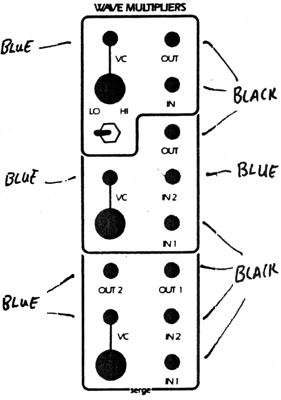
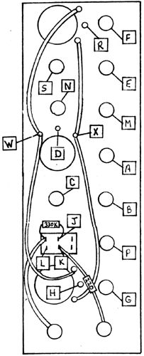

|

VC Wave MultipliersParts for Kit
 Apply a sine wave to the IN jack of the top section. With the switch in the LO position, manually turn the knob up and the signal level of the sine wave should increase at the OUT jack. With the pot turned down, apply a control voltage into the VC in jack, and the sine wave should be gain controlled by the control voltage. Switch to the HI position and go through the some manual and control voltage tests. The unit will now function as a waveshaper, producing a moderate increase in harmonics from a sine wave input. As the pot is turned up or as the control voltage increases, the harmonics become richer. Apply a sine wave into the IN 1 of the middle section. Go through the some sequence of manual and control voltage checks and note the output becoming very rich in harmonics as the pot is turned up or as control voltage level increases. Apply a sine wave from another oscillator into IN 2. The output of the section should be a complex timbre representing the intermodulation of the two signals and the level of waveshaping set by the knob or control voltage. Disconnect the signals from IN 1 and IN 2, and connect the triangle wave output from an NTO or PCO into the IN 1 jack. Turn the modulation knob up to about mid-range, and disconnect the triangle wave from IN 1 and connect to IN 2. A difference in effect should be heard, since the triangle wave is a positive going waveform and the two inputs are coupled differently. IN 1 is coupled for AC only and IN 2 is coupled for DC. Do the some tests for the bottom section, but note that the two inputs are AC coupled only. The difference between the middle and the bottom section is that when a sine wave is applied to the middle section, odd harmonics are generated, up to the 13th harmonic. The bottom section will generate the even harmonics, 2, 4, and 8 from the sine wave input. Adjustments an this PC board are for control voltage rejection. They should not need to be re-adjusted unless components are replaced. The middle trimmer adjusts the CV rejection for the top section. The top trimmer adjusts the CV rejection for the middle multiplier. The bottom section has no adjustments.
|